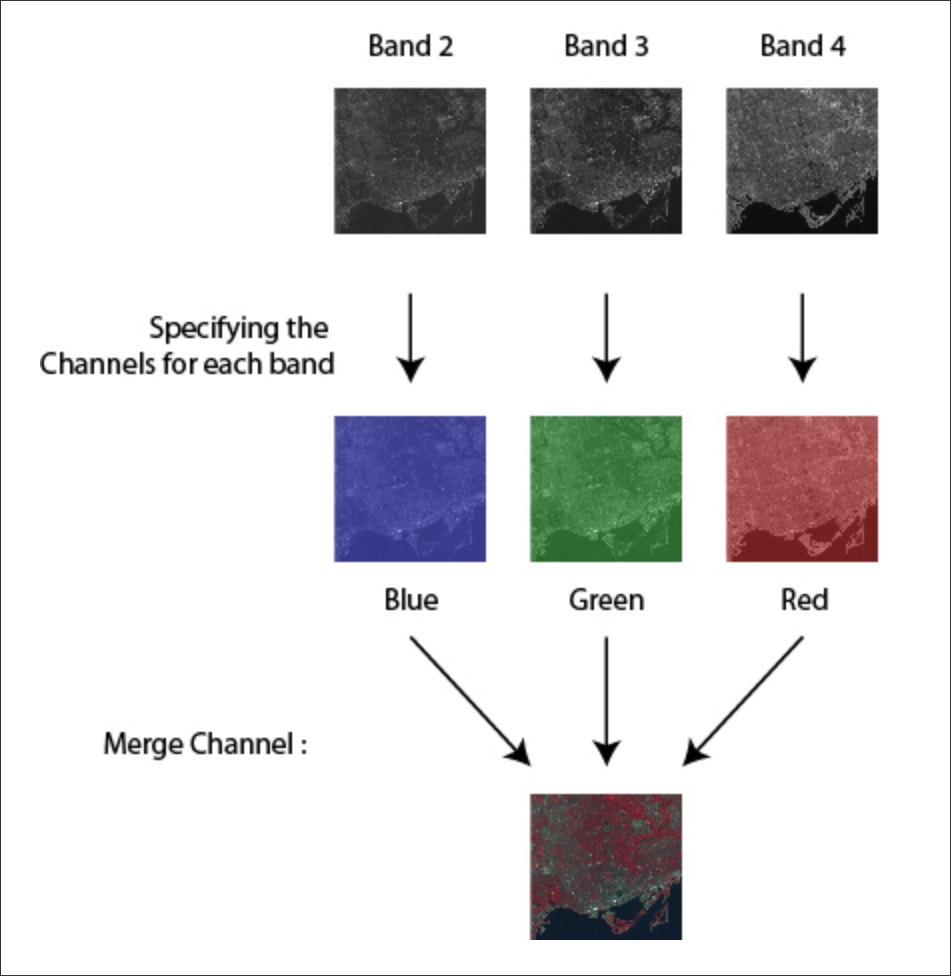
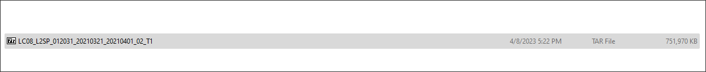

Class 10 Lecture Demonstration Lab
Spring 2024 | NINT5380 CRN2115
Remote Sensing - Image Composites & Classification
Part I
Remote Sensing - Multiband Imagery
Unlike single-band imagery, creating a composite image requires multiple band inputs, typically derived from a spectral sensor product like that of the Landsat program.

Part II
Composite Bands in ArcGIS
In order to composite bands, its critical to understand which input bands will create desired composite outputs. One output is ‘natural color’ or ‘true color’ (432); all other band combinations are various ‘false color’ composites.
In contrast to a true-color image, a false-color image sacrifices natural color rendition in order to ease the detection of features that are not readily discernible otherwise – for example the use of near infrared for the detection of vegetation in satellite images.
To start, review the two following charts for band themes and combinations for the Landsat 8 program:
Utilize the following data location for this Lecture Demonstration:
Next, point to the .tar compressed directory and utilize 7-zip to fully uncompress. Connect the .mxd for this lecture demo to the directory that now contains the uncompressed Landsat data:

.tar compressed directory.tar uncompressed directory in ArcCatalogNote the bands 1 through 7 with the prefix SR; these are the surface reflectance bands that are the standard band input for composite imagery:
SR bands 1 through 7Next, search for Composite Bands tool:
SR bands 1 through 7Input the bands 4,3,2 in this correct order:
The order in which the tool is populated preserves the order of the resulting band combination composite, i.e. 4,3,2 is 4 first, 3 second and 2 third in order.
Run the tool and check results:
Note the ordering of input bands to the color channels red, green and blue:
Part III
ISO Clustered Unsupervised Classification
The iso cluster algorithm is an iterative process for computing the minimum Euclidean distance when assigning each candidate cell to a cluster. The process starts with arbitrary means being assigned by the software, one for each cluster (you dictate the number of clusters). Every cell is assigned to the closest of these means.

To start, input the boston_masked.tif to the TOC. Once complete, search for ISO Cluster Unsupervised tool:
Input the following parameters to the tool:
Review the classed result based on 2 simple classes:
Part IV
Supervised Classification
The most common supervised classification methods include:
- Maximum likelihood
- Iso cluster
- Class probability
- Principal components
- Support vector machine (SVM)
ArcGIS has a tool for the Maximum likelihood method that we will use for a supervised classification, compared to the unsupervised result from Part I above.
To start, download a revised training shapefile and place it inside the .mxd directory linked currently in ArcCatalog:
Next, open the attribute table for this training shapefile and note the classvalue attribute. To produce a training signature file, this attribute must feature a Long Integer field type with the heading classvalue.
Next, search for the Create Signatures Tool which transforms a .shp of training polygons to a .GSG signature file:
Input the following tool parameters:
Once complete, find the Maximum Likelihood Classification tool:
Input the following tool parameters:
Once complete, check the results and compare to the first unsupervised result. Its clear that the supervised classification was not as complete as the unsupervised run. This is likely due to the ‘underclassing’ of both land and water features in the original polygon creation in the training session. With more training polygons for both water and land, a supervised classification should be able to meet or exceed that of an unsupervised classification run.